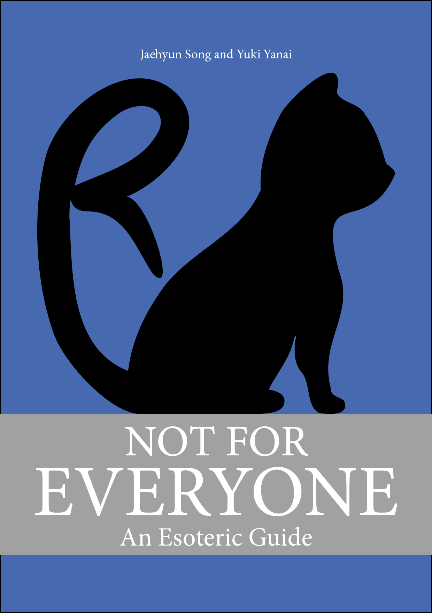
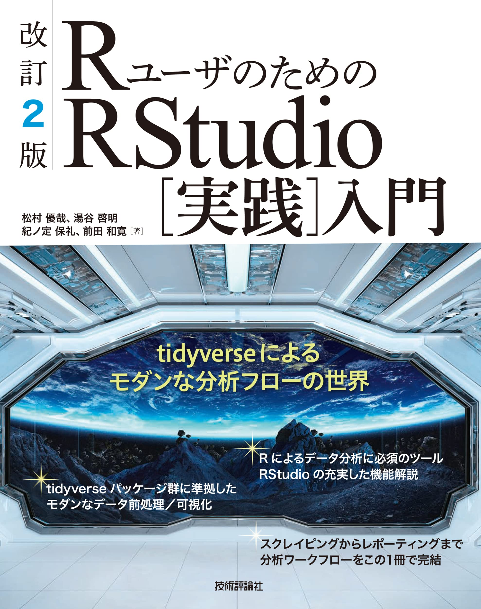

本講義について
概要
- 講義日: 木曜日 第4時限（14:40～16:10）
- 場所: TC304教室（高槻キャンパス C棟 304教室）
- 講義内容: Rの使い方
- Rの基本的な操作 & R Markdown
- データの入出力
- データのハンドリング（前処理）
- データの可視化
- 統計学、確率、多変量解析、因果推論の授業ではない。
- データ分析の手法は後期の「マクロ政治データ分析実習」で紹介する。
- 後期の授業ではRの使い方について解説しない。
- 到達目標: Rを用いたデータ分析の教科書が読める土台づくり
オフィス・アワー
宋、またはTAが研究室に待機し、事前予約なしに相談、質問などが可能な時間
- 毎週火・木曜日3限 (13:00〜14:30)
- 火曜日は宋、木曜日はTAが対応
- 上記の時間外は事前予約が必要（メール、対面）
- メール: song@kansai-u.ac.jp
- 場所：TA227研究室（A棟の2階）
講義内容
- 第1回 イントロダクション
- 第2回 RとIDEの導入
- 第3回 Rの基本的な操作
- 第4回 プログラミングの基本的な概念
- 第5回 R Markdownと再現可能な研究
- 第6回 データ収集
- 第7回 データ型
- 第8回 データ構造
- 第9回 データハンドリング（1）
- 第10回 データハンドリング（2）
- 第11回 データハンドリング（3）
- 第12回 可視化（1）
- 第13回 可視化（2）
- 第14回 可視化（3）
- 第15回 期末テスト
本講義の位置づけ
前提知識
- ファイル・システムの理解
- フォルダー (ディレクトリ)の概念
C:/AAA/BBB/CCC.txt(Windows)や~/AAA/BBB/CCC.text(macOS / Linux)の意味が理解できること- 相対パス / 絶対パスの概念が理解できること
- ブラインド・タッチ (重要)
- 期末レポートは第15回の授業中に執筆する。
- タイピングが遅いと、時間内に期末レポートの完成ができない。
- 第15回の授業までにブラインドタッチの練習を推奨
- この授業に限らず、現代社会で極めて重要なスキル
教科書
Song Jaehyun・矢内勇生.『私たちのR: ベストプラクティスの探求』Web-book
- https://www.jaysong.net/RBook
- 本講義内容を200%カバーする
- 無料
参考書
- 松村優哉 他. 2021. 『改訂2版 RユーザのためのRStudio[実践]入門』技術評論社
- Garrett Grolemund and Hadley Wickham. 2017. R for Data Science. O’Reilly.
- 邦訳『Rではじめるデータサイエンス』(原著は無料: https://r4ds.had.co.nz/)
- Jared P. Lander. 2018. R for Everyone. Addison-Wesley Professional.
- 邦訳『みんなのR』



成績評価
- 平常点 (20%)
- 学生証を持参すること（カードリーダーで出席を確認）
- 欠席4回以上は評価の対象外（3回まで評価対象）
- 課題 (50%)
- 計8〜9回の課題を予定
- 未提出4回以上は評価の対象外（3回まで評価対象）
- 課題提出期限の延長はない (提出までの期間が長めであるため)
- 提出期限は次回講義の前日23時59分まで
- 期限内に提出出来なかった場合でも宋に連絡する必要はない (どうせ延ばしてくれない)。
- 不正行為厳禁
- 期末レポート (30%)
- 第15回の授業内に期末レポートを執筆
- 未提出者は評価の対象外
- 不正行為厳禁
注意事項
参考) マクロ政治データ分析実習の内容 (予定)
- リサーチデザイン
- 記述統計
- 統計的推定と仮説検定
- 変数間の関係 ( \(t\) 検定、 \(\chi^2\) 検定、相関分析)
- 線形回帰分析
- 交互作用
- ロジスティック回帰分析
- 分析結果の可視化